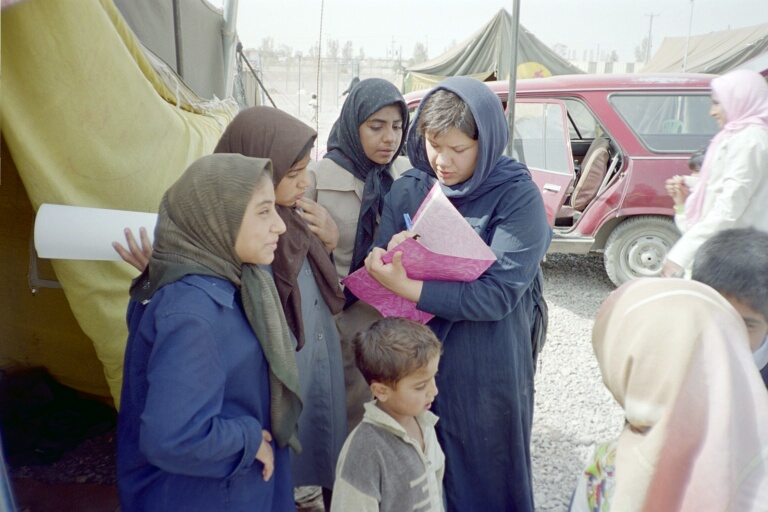

صدای جوانش را بی مهابا سر می دهد و می خواند . از عشق می گوید و از آرمان ، از تلاش می گوید و از نیروی مردم ، نه ... " کار هر سینه نیست این آواز " .
آواز دلارام از سینه نسلی بر می خیزد که خود به تجربه و به تلاش، آرمان هایش را ساخته . نه قیم مآبی پیشه کرده ، نه قهرمانی و نه سهم خواهی از قدرت. او آواز می خواند تاکه صدایش به گوش بچه ها ی پامنار برسد به گوش کارتن خواب های ترمینال جنوب ، به گوش زنان مصیبت دیده از زلزله بم، و به گوش آنانی که برابری ، صلح ، امنیت و تامین حقوق بشر را آرزومندند.

نسل دلارام جهان را به گونه ای دیگر دید ،پای بر زمین واقعیات نهاد و پرواز را آموخت .
مجازاتش اما نه هم سنگ آرمان هایش بود و نه به بلندای صدای جوان ونیرومندش آنگاه که در جشن عروسی همراه بادوستانش عاشقانه و آرزومند آواز سرداد و از عشق گفت .... نه ، کار هر سینه نیست این آواز.
در کانون مدافعان حقوق بشر بودیم که با دوستان و همسرش «پیام» وارد شد و پیغام اجرای احکام را داد. همسرجوانش پرسشگر نگاه می کرد که یعنی این بود پاسخ تمامی عشق به مردم و تلاش برای ساختن وطن بر پایه های عدالت و برابری ؟!!.. و من نمی دانستم در جواب نگاه او و در پاسخ صدای رسای عروس جوانش چه بگویم جز آن که :
دلارام را بدین سیاست می برند که قفل و زنجیر چهاردیواری زندانش قفلی بر زبان زنان شود و بی تردید نمی دانند که کلید این قفل را زنان نه به جادو که به تدبیر، سالهاست با زبان قانون و مدنیت صاحب شده اند.
دلارام را می برند که زنان به خانه و آشپزخانه برگردند و نمی دانند که این نسل راه بر مادران و مادربزرگان خاموش خود نیز هموار کرده وروشن ساخته است .
دلارام را می برند و بی تردید نمی دانند که نمی توانند مانع راه پرفراز و نشیب او شوند. راه این نسل از کوچه پس کوچه های شهرمی گذرد از پستوهای خانه های دود گرفته زنان سرپرست خانوار ،از خیابان های مرکز شهر، ازدل زنان خانه دار و مدبری که به رنج و با امید چشم به تغییر قوانین تبعیض آمیز دوخته اند، از میان زنان کارمند، معلم ، دانشگاهی ، محقق ، فعالان حقوق بشری و کسانی که هم این نسل را پرورانده اند وهم خود دست پرورده خلاقیت واستقلال رای این نسل هستند.
راه این نسل هرچند که " راه شیری " است و با ستاره ها نسبت دارد، اما از واقعیت زندگی زنان آگاه و به پا خاسته ایرانی سر بر آورده . دلارام اگرهم که به زندان رود نه نگران جوانی خویش و نه نگران غم خانواده و نه نگران تنهایی همسر جوانش است. دلارا م دغدغه تصویب لایحه خانواده را در مجلس هفتم دارد دغدغه امضاهای منتظر برگه های کمپین یک میلیون امضا است که در دست او مانده . و رفتنش اگر با خام فکری دولت مردان محقق شود تنها یک پیام برای زنان می گذارد : قسم بر عشق و قسم بر عدالت که بر هیچ تبعیضی گردن ننهیم.